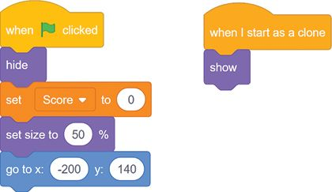

ICT - Year 6
Naypyitaw International Science Academy
Now read page 36 and 37
Q. What would be the output of the following code?

Q. What would be the output of the following code?

Q. What is the difference in the code blocks below?
In Scratch, you use the mouse to drag and drop code blocks, so little typing is needed. Here’s an example of the snap-together code blocks.
The most basic object in Scratch is the sprite. Sprites appear on the Stage and their code blocks control their behavior.
The editor automatically starts with a cat sprite for all new projects, but you can delete it or add more sprites.
You can program a sprite by adding code blocks to the Code Area on the right side of the screen.
To create a new code block, drag it from the center Block Palette to the Code Area.
The code blocks that have a notch on top and bump on the bottom are called stack blocks.
Stack blocks can also fit in between blocks.
You can change a white field inside a block by clicking the white area and entering new input.
The rounded blocks are called reporter blocks. They fit inside the white fields.
To remove blocks, drag them out of the script.
You can also right-click a block and select Delete Block from the menu that appears.
Task 1: Loop
- Make the above code script in Scratch
- Run it and explain your results
Task 3: Degrees and Direction
- Click Create to start a new scratch project
- In the Code Area for the cat sprite named Sprite1, add the code below
- Find out the direction that the cat points in while saying: $45$, $60$, $90$, $120$, $180$, $0$, $-45$, $-90$, $-145$
Task 4: Rainbow Lines
- Click the Scripts tab to make the Code Area visible. Add the code on the next page to the Code Area for Dot 1
- Right-click the Dot 1 sprite in the Sprite List and select Duplicate.
- Do the above step once more so that you make two duplicates: Dot 2 and Dot 3
- Run the code with the green flag to check your code so far
Task 6: Movement
The x and y determine the position of the sprite on the screen. To make the sprite move, we increase or decrease these values
Task 6: Movement
- In a new project, Add the following code to the cat sprite
- Extend the code to include the other directions
- Click the green flag to test the code so far. The cat should walk up, down, left, and right when you press the arrow keys.
Task 7: Jumping
Gravity makes objects accelerate downward.
To add gravity, the Cat sprite has to move down, and the speed at which it moves down must increase.
Add the following code to the Cat sprite to add gravity for it.
Run the program to test out the gravity
Task 7: Jumping
The Cat should not keep falling forever
Add the Ground-Level Code to stop its fall after reaching a certain height
Task 7: Jumping
Add the code below to the cat to make it jump.
Run the program with the green flag to test the cat jumping
Try experimenting with different numbers for the set y velocity to and change y velocity by blocks.
Task 7: Jumping
Add the code below to the cat to make it walk left and right.
Run the program with the green flag to test the cat walking
Task 8: Cloning
The create clone of myself block makes a duplicate of the sprite, which is called a clone.
- Open Scratch in a new tab and create a new program.
- Add this code to the Cat sprite
- Run the program with the green flag to test the result
Task 9: Jumping Game
Follow along the tutorial below to create a jumping game
Exercise: Drawing a square
- Create a new project in Scratch
- Change the sprite to a blue dot (Refer task 4 if needed)
- Complete the code below to draw a square
Task 10: Questioning
- Create a new Scratch Project
- Enter the following code
- To make the pink blocks, visit the My Blocks section and click Make a block
- You will also need to make a variable called name in the variables section
Task 10: Questioning
Extend the code as below
Exercise: Further extend the above code to make Scratch ask "What kind of music do you like?" and give a suitable response.
Exercise
- Create a new Scratch program
- Program it to make Scratch to give you a quiz.
- Each correct answer should say "Correct" and increase the user's score by 1
- If the answer is incorrect, say "Incorrect"
Make Scratch have different answers based on your responses.
Task 11: Brick Breaker
- Make a new Scratch project
- right-click the Sprite1 cat in the Sprite List and select delete from the menu.
- Then click the Choose a Sprite button and select the green Paddle sprite.
- Add this code to the Paddle sprite
Task 11: Brick Breaker
The paddle code makes the paddle follow the mouse but only in the horizontal direction

Task 11: Brick Breaker
The rotation style prevents it from rotating so it stays straight

Task 11: Brick Breaker
- Click the Choose a Sprite button in the lower right and select the Tennis Ball sprite.
- Add the following code to the tennis ball sprite
- Run your program to test how it works so far
Task 11: Brick Breaker
- Keep adding to the Tennis Ball code so it will bounce off the Paddle sprite.
- To do so, you’ll need to create a new broadcast message called bounce.
Task 11: Brick Breaker
The point in direction(180 - direction) code just calculates the direction in which the ball will bounce based on the ball’s current direction.

Task 11: Brick Breaker
- Click the Choose a Sprite button in the lower right and select the Button 2 sprite
- Rename this sprite Brick in the Sprite Pane.
- Create a new variable by selecting the orange Variables category and clicking the Make a Variable button.
- You’ll have to name this variable Score and set it to For all sprites.
- Add the following code on the next page to the Brick sprite.
Task 11: Brick Breaker
At the beginning of the game, the Score variable is set to 0 to remove any points from a previous game.
The original sprite hides itself with the hide block, and moves to the top-left corner of the Stage
We will use only clones of this original block which show themselves with the show block.
Task 11: Brick Breaker
- For the Brick Breaker game, we want many rows of bricks.
- To make the rows of bricks, we’ll move the original sprite across the top of the screen, creating a trail of clones.
- Add the code on the next page to the Brick sprite.
Task 11: Brick Breaker

Task 11: Brick Breaker
The last Brick in the figure is the original sprite, not a clone, so we should hide it
Task 11: Brick Breaker
- Update the code for the Brick sprite to match this
- Test your code so far

Task 16: Particle Effects
- Create a new Scratch project
- Download this file
- Click File --> Load to open the file you downloaded
You should have these sprites loaded
Task 16: Particle Effects
Select the Stage and add this code
Task 16: Particle Effects
Add this code to the Generator 1 sprite

Press the B key on your keyboard to test your code.
Task 16: Particle Effects
Select the Generator 2
Add it's code to create a different effect.
Task 16: Particle Effects
Select the Generator 3 sprite.
Add it's code to create a bubble effect.
This code is more complex and uses the ghost effect to make the clones slowly appear ..
Task 16: Particle Effects
The next generator is rain, so we need a cloud from which it will fall.
Select the Cloud sprite.
Add its code

Task 16: Particle Effects
Select the Rain sprite.
Add it's code.
Notice how the sprite is cloned, then each clone is moved to a random x-position before falling (moving down)

Press the B key on your keyboard to test your code.
Task 17: Snowflake
- Open a new Scratch Project
- Start by adding the pen extension.
- Click on the blue button at the bottom left of the screen and then select the pen extension.
- Once the pen is added, add the following blocks to draw a single side
Task 17: Snowflake
Go to My Blocks and add the following
Task 17: Snowflake
Add the following code to define the block.

(Right click the image and click open image in a new tab to see it full size)
Task 17: Snowflake
Go to My Blocks again and make a block called Create Snowflake

Set the backdrop to light blue
Task 17: Snowflake
Add the code below to draw the snowflake
Task 18: Flappy Bird

Which is the most expensive fruit in the spreadsheet?
How much does a laptop cost?
Task 1: Calculating

- Make a spreadsheet and enter some numbers in the first two columns
- Select cell $C1$ and write $=A1 + B1$ to calculate the sum of the first two cells
- Drag the blue box at the corner to add the remaining rows
Task 2: Attractions
Make a table listing 10 travel attractions in Myanmar.
The table should have columns for:
- Attraction Name
- Location
- Description
- Distance in kilometers
- Add one more column called Travel Time
- Calculate it as $\text{Travel Time} = \displaystyle \frac{\text{Distance}}{\text{Speed}}$
- Assume the speed is $60\;km/hr$
Task 2: Attractions
Make a table listing 10 travel attractions in Myanmar.
The table should have columns for:
- Attraction Name
- Location
- Description
- Distance in kilometers
- Add one more column called Journey Cost
- Calculate it as $\text{Journey Cost} = \text{Distance} \times \text{Gas Price per km}$
- Assume the gas price for a kilometer is $500$ kyats.
Task 3
- In a spreadsheet, add the list of the top 10 richest people in the world and their net worth.
- Add a new row called Total Wealth and use a formula to add up the net worths to get the total wealth
- Add a new row called Average Net Worth and use a formula to calculate the average as $\text{average} = \frac{\text{total}}{10}$
Task 4
- In a spreadsheet, make a list of the 10 poorest countries in the world.
- Add columns for their population size and their GDP.
- Add a new column for GDP per capita. Calculate the GDP per capita as $\text{GDP per capita} = \frac{\text{GDP}}{\text{population size}}$
- Repeat the same steps to make rows for Total GDP and Average GDP
Task 5
- Copy the above data into a spreadsheet.
- Apply a Custom Sort so the rides are sorted:
first by Amusement Park, then by Speed
Task 6
- Download the spreadsheet from here: download
- Import the spreadsheet into Google Sheets or Excel
- Sort the table, first by Travel Method, then by Price
Task 7
- Download the spreadsheet from here: download
- Import the spreadsheet into Google Sheets or Excel
- Complete the task in the spreadsheet.
Task 8
- Download the spreadsheet from here: download
- Open the spreadsheet in Excel or Google Sheets
- Convert the data in the sheet to a table. In Google Sheets, you can do this by highlighting all the data and then clicking Format --> Convert to Table
- Click the dropdown button in the Cost column heading and click Sort by Z to A to sort in descending order of cost.
Task 8
- Click the dropdown button in the Cost Centre column and click Filter Column.
- In Filter by Values, make sure only the center ZT0000 is selected and click OK.
- Highlight all the remaining columns and apply a green background to them
- Remove the Filter on the Cost Centre column to show the remaining rows.
- Sort by Cost in descending order again.
Task 9
- Download the file here and open it in Google Sheets or Microsoft Excel: download
- Set a data validation on cells D4:D15 to restrict users to only typing in a whole number between 0 and 26.
- In Google Sheets:
- Selecting the cells $D4:D15$, then go to Data --> Data Validation --> Add Rule.
- Under Criteria, select Is Between and type the values $0$ and $26$ for minimum and maximum.
- Type these values into column D to verify that the validation rules work: 38 and -17
Task 10
- Download the file here and open it in Google Sheets or Microsoft Excel:download (same as previous task)
- Apply a list validation on the Department column. This will make it so you can only enter specific values from a dropdown.
- In Google Sheets:
- select cells $F4:F15$ and go to Data --> Data Validation --> Add Rule
- Under Criteria, select Dropdown (from a range) and type L3:L10 as the range.
- In Microsoft Excel:
- Select cells $F4:F15$, and type Validation in the search bar at the top
- In the Allow menu, select List
- In the Source box, type L3:L10
Task 11
- Type out the above data into a new spreadsheet
- Find the Average using a formula by add all the marks cells and then dividing by the number of students.
- To do this you can use the formula =(B2+B3+B4+B5+B6+B7+B8)/7
Task 11
- The IF function lets you check if a condition is true and set the cell value based on that.
- In the $C2$ cell, use the IF function to check if the student scored more than 60 with the formula =IF(B2 >=60, "yes", "no")
- Extend the formula to all other cells in the $C$ column
Task 11
- Select all the data as shown then go to Data --> Create a Filter
- This will add buttons on the column headings that will allow you to filter out the students who passed.
- Click the filter button (looks like 3 lines) next to the Passed column heading.
- Under Filter values, deselect no and select only yes and click OK.